QSMO Online Help Outline QSMO Configuration Requirements Configuration Signature Certificate Configuration Quantum-Safe KEM Certificate Configuration Traditional KEM Certificate Configuration Encrypt and/or Sign Emails Using QSMO Sign an Email Encrypt an Email Encrypt and Sign an Email Managing QSMO Manage Certificates Settings Update Passphrases Reset QSMO QSMO Configuration Requirements In order to use QSMO, you first need to configure it. During the configuration phase, you will need to have your three following certificates: a PKCS#12 file in PEM format of your signature certificate, a PKCS#12 file in PEM format of your KEM certificate, a PKCS#12 file in PEM format of your traditional KEM certificate. Configuration Once QSMO is installed, you have to configure it.First, launch Outlook, then you will have to configure your three certificates: the quantum-safe signature certificate, the quantum-safe KEM certificate, and the traditional KEM certificate. Signature Configuration A pop-up appears, informing you that the configuration of the signature certificate will start. 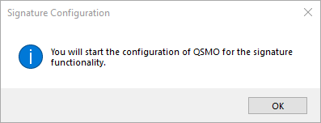 After clicking on OK, you have to select the PKCS#12 file in PEM format of your signature certificate, and then click on Open, as illustrated below. 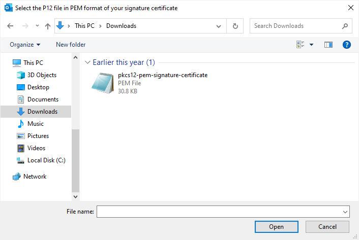 In order to finish the signature certificate configuration, you have to enter the passphrase corresponding to the provided signature certificate and validate it by pressing OK. Encryption Configuration The configuration of the encryption functionality consists in two parts: the configuration of the quantum-safe KEM certificate and the configuration of the traditional KEM certificate. The configuration starts with a pop-up informing you that the configuration of the quantum-safe KEM certificate will start. 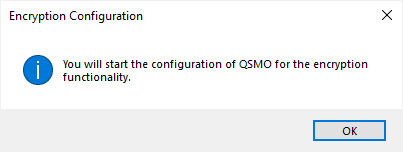 Qunatum-Safe KEM Certificate Configuration After clicking on OK, you have to select the PKCS#12 file in PEM format of your quantum-safe KEM certificate, and then click on Open, as illustrated below. 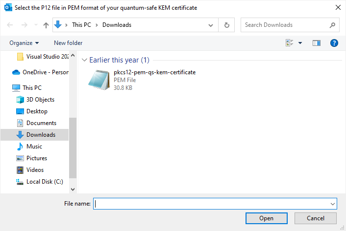 In order to finish the quantum-safe KEM certificate configuration, you have to enter the passphrase corresponding to the provided quantum-safe KEM certificate and validate it by pressing OK. Traditional KEM Certificate Configuration After the configuration of the quantum-safe KEM certificate, you have to select the PKCS#12 file in PEM format of your traditional KEM certificate, and then click on Open, as illustrated below. 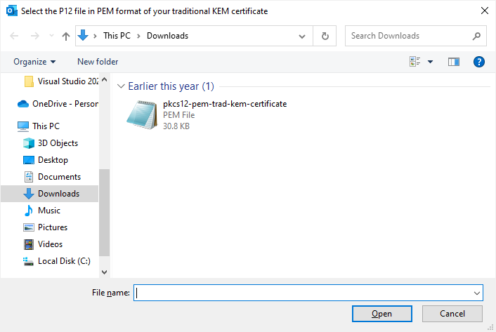 In order to finish the traditional KEM certificate configuration, you have to enter the passphrase corresponding to the provided traditional KEM certificate and validate it by pressing OK. 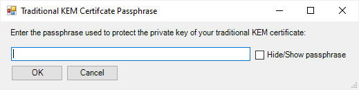 Encrypt and/or Sign Emails Using QSMO We assume you have correctly configured QSMO with your three certificates (the signature certificate, the KEM certificate, and the traditional KEM certificate). Sign an Email Since the signature of an email does not depend on the receiver, the signature is activated by default for each email sent. In order to deactivate the signature for an email you are writting, you have to unselect the signature option in the QSMO section of the Outlook ribbon as illustrated below. 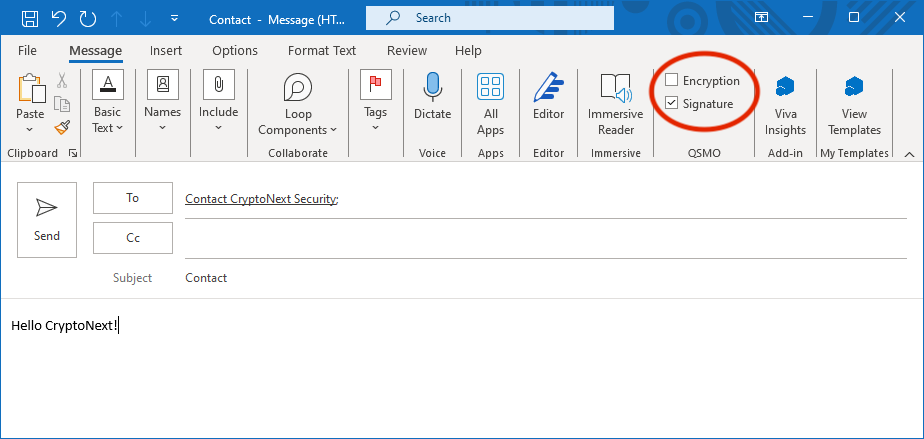 Encrypt an Email To encrypt an email you are writting, you have to select the encryption option in the QSMO section of the Outlook ribbon as illustrated below. Note that to encrypt an email for a set of receivers, you have to own the KEM certificate of each receiver. In order to manage KEM certificates, read the Managing KEM Certificates part of this online help. Encrypt and Sign an Email To encrypt and sign an email you are writting, you have to select the encryption and the signature options in the QSMO section of the Outlook ribbon as illustrated below. Note that to encrypt an email for a set of receivers, you have to own the KEM certificate of each receiver. In order to manage KEM certificates, read the Managing KEM Certificates part of this online help. Managing QSMO QSMO provides the essential to manage certificates, passphrases, and reset client configuration. We explain these functionalities in this section. Manage Certificates In the context of the post-quantum cryptography, we need seperate certificates for signature and encryption. Hence, QSMO provides managing KEM certificates for recipients. We recall that we use two KEM certificates for each recipient: one quantum-safe KEM certificate, and one traditional KEM certificate. To view the current recipients for whom you have imported KEM certificates, or to import new KEM certificates for a recipient, click on Manage certificates in the QSMO section of the Outlook ribbon. 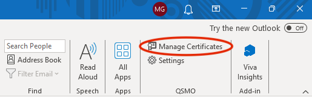 This show you the current recipients for whom you have imported KEM certificates. 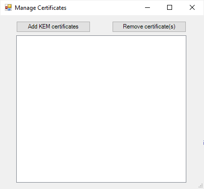 To import a pair of KEM certificates of a recipient, click on Add KEM certificates. A pop-up appears, informing you to select first the quantum-safe KEM certificate, then the traditional KEM certificate of the recipient. 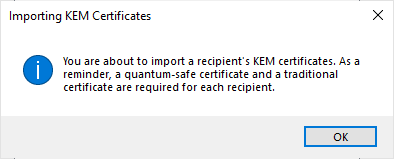 Select the quantum-safe KEM certificate then the traditional KEM certificate. 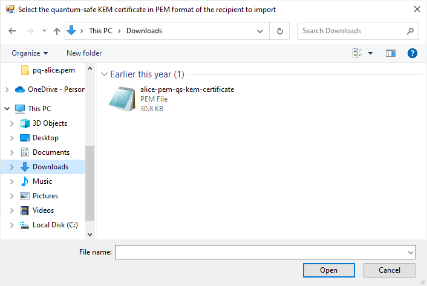 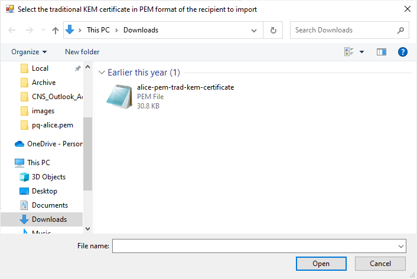 At the end of this phase, you will see a new email address in the list, corresponding to the email address associated to the two KEM certificates that you have just added. 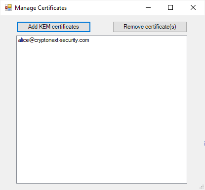 Settings To access QSMO settings, click on Settings in the QSMO section of the Outlook ribbon. 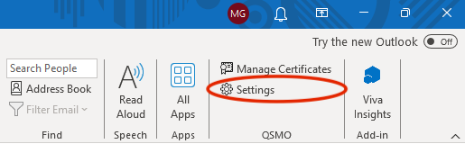 Update Passphrases Sometimes, you will need to reset the passphrases entered at the starting of QSMO because you made a typo typically. This error will be only noticed you during a signing or an encryption process. Hence, to update the passphrases set during this current session, you can go the settings of QSMO to reset the considered wrong passphrase. Reset QSMO QSMO allows to reset entirely the plugin to change used certificates or to correct a wrong configuration. By clicking on Reset QSMO you will play again the configuration phase described here.